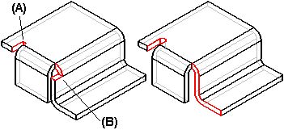
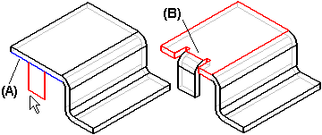
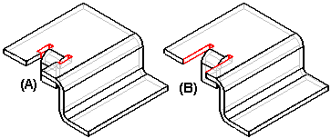
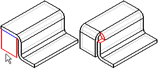
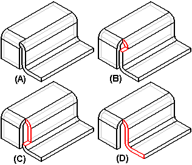

Applying bend and corner relief
When constructing and modifying flanges and contour flanges, you can use the Flange Options dialog box to control whether bend relief (A) or corner relief (B) is included as part of the feature. If you define bend or corner relief, you can also control its size and shape.

When you specify bend relief, it is applied to the source face from which the flange is constructed. For example, when constructing a partial flange that is centered on the selected edge (A), bend relief is added to the source face (B) on both sides of the flange.

You can use the Extend Relief option to specify whether the bend relief is applied only to the area adjacent to the bend (A), or to the entire source face (B).

When specifying corner relief, it is applied to the flanges adjacent to the flange you are constructing.

You can define the following options when applying corner relief:
|
(A) |
None |
|
(B) |
Bend Only |
|
(C) |
Bend And Face |
|
(D) |
Bend And Face Chain |

Deleting system-generated bend and relief faces
When you create a feature with zero-radius bends or with no bend relief specified, Solid Edge automatically creates minimum radius bend or a small bend relief in the model. This is done to facilitate flattening the model.
You can use the Delete Relief Faces command to delete the system-generated interior rounds and bend relief.
How do I
Delete relief faces from a sheet metal partLook up more details
Delete Relief Faces commandDelete Relief Faces command bar